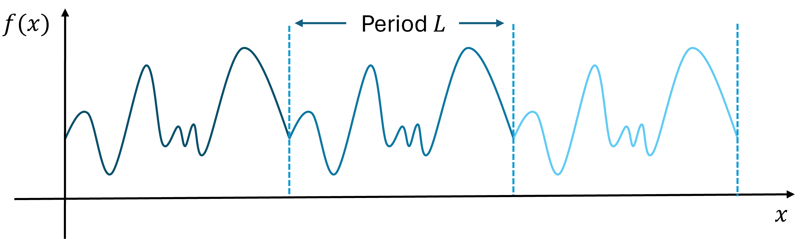
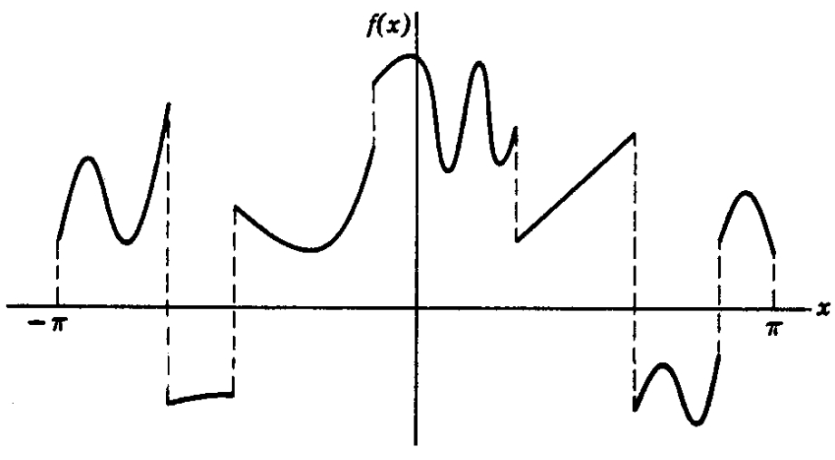
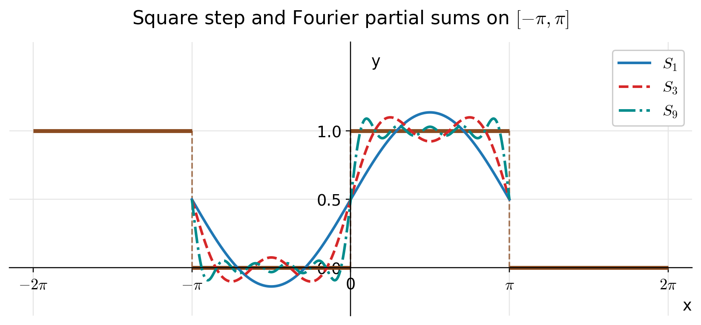
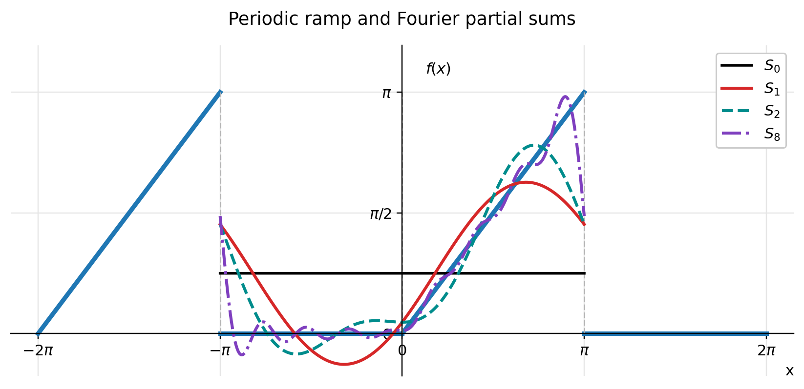
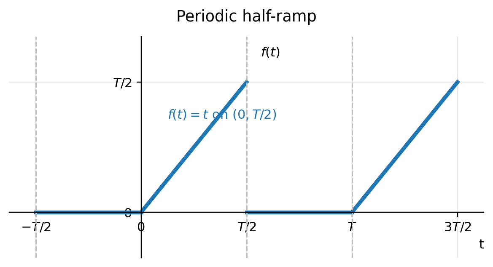
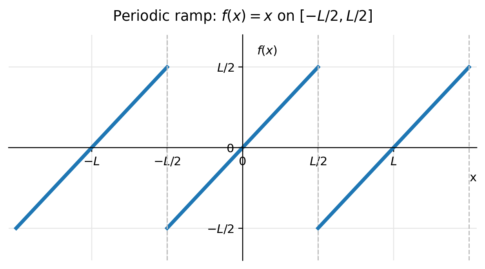
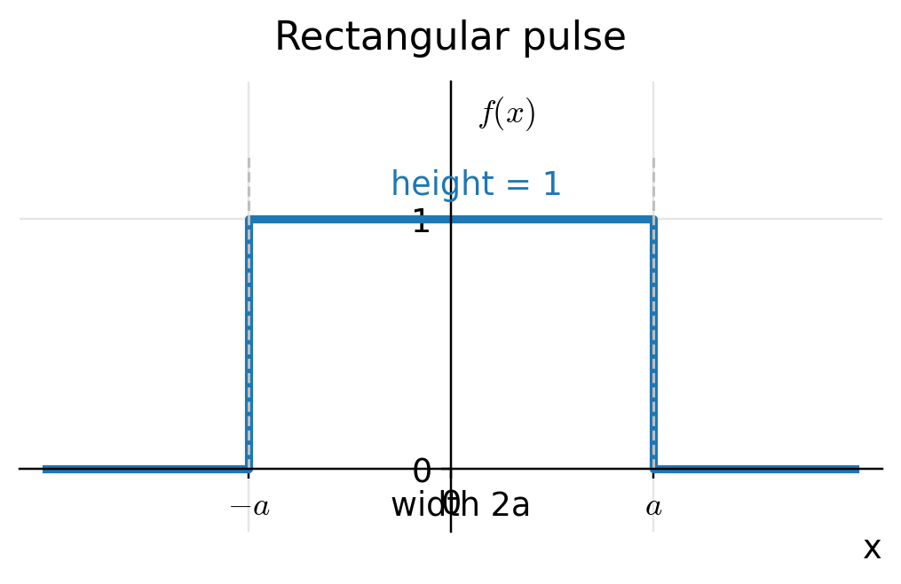
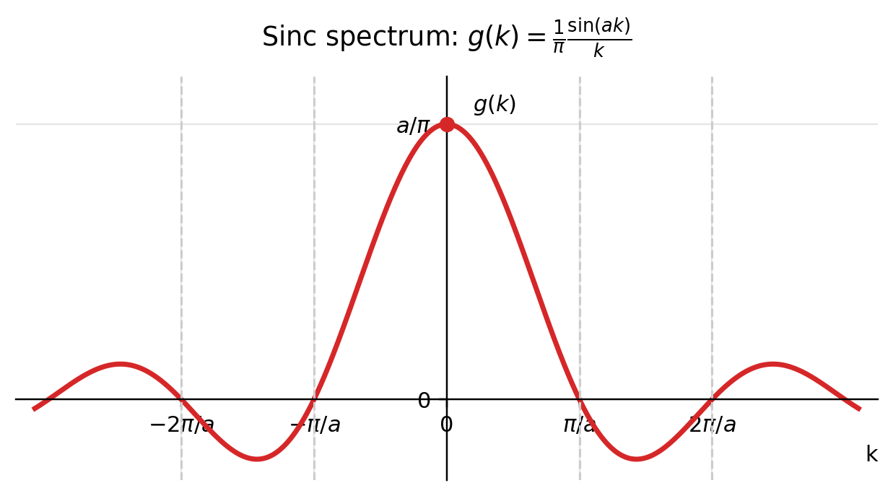
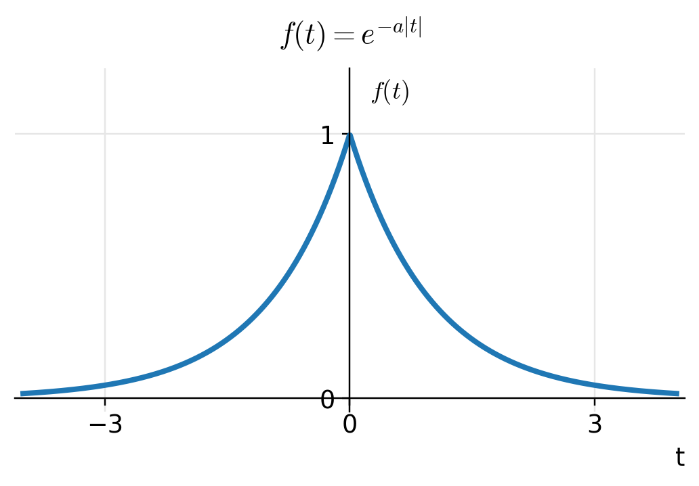
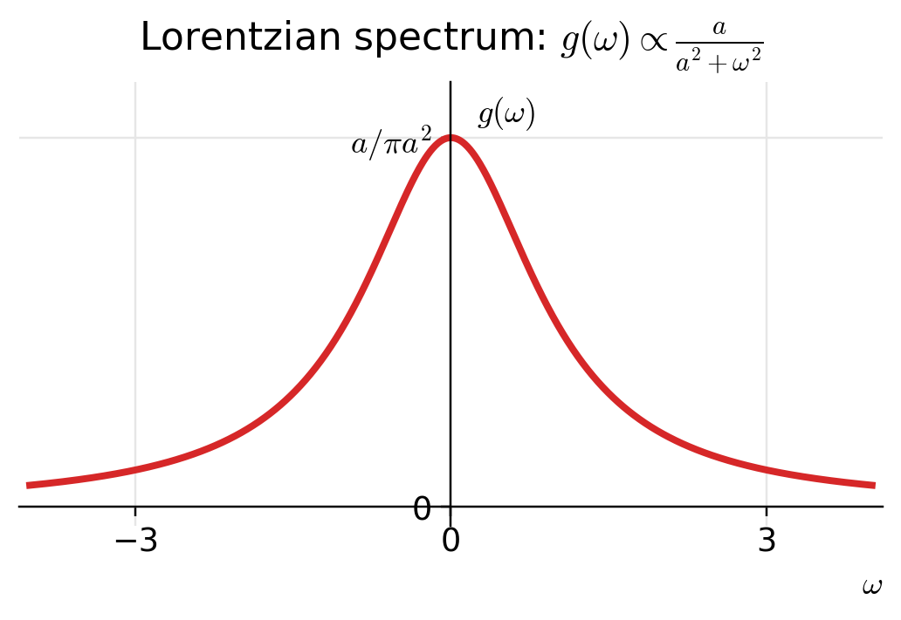

Chapter 7
Fourier Series and Transforms
Even and Odd Functions
A function \( f(x) \) is said to be even if
\begin{equation} f(-x) = f(x). \end{equation}A function \( f(x) \) is said to be odd if
\begin{equation} f(-x) = -f(x). \end{equation}
Properties of Integrals over Symmetric Limits:
In general, any function \( f(x) \) can be expressed as the sum of an even and an odd function:
The first term is the even part of \( f(x) \), and the second term is the odd part.
Periodic Functions and Fourier Series
A function \( f(x) \) is said to be periodic with period \(L>0\) if
The smallest positive \(L\) satisfying this relation is called the fundamental period.

Common periodic functions include
all sharing the same fundamental period \(L\).
For a periodic function \( f(x) \) of period \( L \), the average value (or mean value) of the function over one period is defined as
Fundamental Periodic Basis
For the exponential function \( e^{ikx} \) to have period \(L\),
Since \( e^{i2\pi n}=1 \) for integers \(n\), we have
Thus, the functions
form a complete orthogonal set over one period.
Complex Fourier Series
A periodic function \( f(x) \) of period \(L\) can be represented as
where the coefficients are
Starting from \( f(x) = \sum c_n e^{i k_n x} \), multiply by \( e^{-i k_m x} \) and integrate:
by orthogonality. Hence,
For a real-valued function \( f(x) \), the complex coefficients satisfy
Real Form of the Fourier Series
Starting from the complex Fourier series.
We begin with the complex form of the Fourier series for a periodic function \( f(x) \) of period \( L \):
We separate the \( n=0 \) term and rearrange positive and negative indices:
Using \( c_{-n} = c_n^* \), we have
Expressing in terms of sine and cosine.
Let
where \( a_n \) and \( b_n \) are real numbers.
Then
Hence the series becomes
Thus the final real form of the Fourier series is
\( \tfrac{a_0}{2} \): average (DC component) of \(f(x)\),
\( a_n \): amplitude of the cosine component,
\( b_n \): amplitude of the sine component,
frequency of the \(n\)-th harmonic: \( f_n = \tfrac{n}{L}. \)
For \(f(x)\) of period \(L\):
Multiply both sides of the Fourier expansion by \( \cos\!\left(\frac{2\pi m x}{L}\right) \) and integrate over one period:
Using the orthogonality relations:
all terms vanish except the one where \( n = m \):
Hence,
Similarly, multiplying the Fourier series by \( \sin\!\left(\frac{2\pi m x}{L}\right) \) and integrating gives
Finally, integrating both sides of the Fourier expansion over one period. Since the integrals of all sine and cosine terms vanish over a full period, only the constant term \(\tfrac{a_0}{2}\) survives:
Hence,
consistent with the general formula for \(a_n\) at \(n=0\). Note that it is \(\tfrac{a_0}{2}\), not \(a_0\), that equals the average value (mean) of \(f(x)\) over one period; writing the constant term as \(\tfrac{a_0}{2}\) is precisely what lets the single formula \(a_n = \tfrac{2}{L}\int f\cos(2\pi n x/L)\,dx\) cover the case \(n=0\).
Dirichlet Conditions and Convergence of Fourier Series
A periodic function \( f(x) \) of period \( L \) can be represented by a Fourier series (without modification) on the interval \( \big[-\tfrac{L}{2}, \tfrac{L}{2}\big] \) if it satisfies the following conditions:
\( f(x) \) is single-valued and piecewise continuous within one period.
\( f(x) \) has a finite number of finite discontinuities.
\( f(x) \) has a finite number of maxima and minima within one period.
The integral of its absolute value over one period is finite:
\begin{equation} \int_{-L/2}^{L/2} |f(x)|\,dx < \infty. \end{equation}

If \( f(x) \) satisfies the Dirichlet conditions and has period \( L \), then its Fourier series
converges as follows:
At every point where \( f(x) \) is continuous, the Fourier series converges to \( f(x) \).
At each point of discontinuity \( x_0 \), the Fourier series converges to the midpoint of the jump:
\begin{equation} f_{\text{series}}(x_0) = \frac{1}{2}\Big[f(x_0^+) + f(x_0^-)\Big]. \end{equation}
Meaning and Interpretation of the Fourier Series
The Fourier series allows us to express any sufficiently smooth periodic function \( f(x) \) (with period \(L\)) as a sum of simple oscillatory components — sine and cosine waves. Mathematically,
Each term in the sum represents a harmonic component (or mode) of the signal.
The \(n\)-th term in the Fourier series,
is called the \(n\)-th harmonic. It corresponds to a wave of frequency
Thus,
Each harmonic contributes a specific frequency, amplitude, and phase to the total waveform. The original function \( f(x) \) is reconstructed by summing all harmonic components:
As more harmonics are included, the approximation of \( f(x) \) becomes more accurate. Lower harmonics (\(n=0,1,2\)) describe the overall shape, while higher harmonics capture finer details and sharp transitions.
Applications in Signal Processing
A low-pass filter removes high-frequency (large \(n\)) components from a signal, keeping only low-frequency terms:
where \(N\) sets the cutoff frequency.
Signal processing: Decompose and reconstruct signals by frequency content.
Noise reduction: Remove unwanted high-frequency components using low-pass filtering.
Data compression: Approximate a signal using only the dominant harmonics.
Physics: Analyze normal modes in vibrating strings, membranes, and quantum systems.
Find the Fourier series of

Fourier form on \([-\pi,\pi]\). With period \(L=2\pi\), the series is
where, from the coefficient formulas with \(L=2\pi\) so that \(\tfrac{2}{L}=\tfrac1\pi\),
Solution.
Step 1: \(a_0\). The constant term of the series is \(\tfrac{a_0}{2}\), so we expect it to equal the average of \(f\), namely \(\tfrac12\).
Step 2: \(a_n\) (all \(n\ge1\)).
Step 3: \(b_n\) (all \(n\ge1\)).
Hence
Result.
(i.e., the sum runs over odd \(n\)). At the jump points \(x\equiv 0,\pi\ (\mathrm{mod}\ 2\pi)\), the series converges to the average \(\tfrac{1}{2}\) (Dirichlet’s theorem).

Fourier form on \([-\pi,\pi]\) (period \(2\pi\)).
Solution.
Step 2: Cosine coefficients (\(n\ge1\)).
Step 3: Sine coefficients (\(n\ge1\)).
Final series.
or, separating even/odd indices,
At the jump points \(x\equiv 0,\pi\ (\mathrm{mod}\ 2\pi)\), the series converges to the midpoint value \(\tfrac{1}{2}(0+\pi)=\tfrac{\pi}{2}\).
Let
We find its real Fourier series

Solution.
Hence the DC term is \(a_0/2=\boxed{T/8}\).
Step 2: Cosine coefficients.
Integration by parts with \(u=t\), \(dv=\cos(\omega_n t)\,dt\) gives
Therefore
Using \(\sin(\omega_n T/2)=\sin(n\pi)=0\) and \(\cos(\omega_n T/2)=\cos(n\pi)=(-1)^n\),
Hence
Step 3: Sine coefficients.
With \(u=t\), \(dv=\sin(\omega_n t)\,dt\),
Thus
Result (real Fourier series).
\(a_n\) vanish for even \(n\); cosine terms appear only for odd harmonics and decay as \(1/n^2\).
\(b_n\) decay as \(1/n\) with alternating sign, reflecting the sharp corner at \(t=0\) (Gibbs effect upon truncation).
The average (DC) level over a period is \(T/8\).
Consider a spatially periodic function
which repeats every interval of length \(L\). This represents a periodic ramp waveform, analogous to a sawtooth pattern in signal processing.

Periodic ramp function \(f(x)=x\) on \([-L/2,L/2]\), repeated with period \(L\).
Solution.
For a periodic function \(f(x)\) of period \(L\), the complex Fourier coefficients are
Substitute \(f(x)=x\):
Step 2. Integration by parts.
Let
Then
Step 3. Simplify the second term.
The exponential integral gives
since \(\sin(\pi n)=0\) for all integer \(n\). Hence, only the boundary term contributes.
Step 4. Evaluate the boundary term.
Using \(\cos(\pi n)=(-1)^n\), we have
Step 5. DC (zero-frequency) coefficient.
since \(f(x)=x\) is an odd function and its average over one period is zero.
Step 6. Complete complex Fourier series.
Interpretation.
The amplitude of each harmonic decreases as \(1/n\), meaning higher-frequency components contribute less to the total waveform.
Because \(f(x)\) is an odd function, the coefficients \(c_n\) are purely imaginary (\(c_{-n}=c_n^*\)), corresponding to a sine-only spectrum.
Truncating the series to a few terms yields a smooth approximation of the ramp—analogous to applying a low-pass filter that removes sharp discontinuities.
Fourier Transform
The Fourier transform can be viewed as the limiting case of the complex Fourier series when the period \(L \to \infty\). In this limit, the function \( f(x) \) becomes nonperiodic, and the discrete spectrum of wave numbers becomes continuous.
Transition from Discrete to Continuous Spectrum
Consider a periodic function \(f(x)\) with period \(L\):
When \(L \to \infty\), the spacing between successive wave numbers becomes infinitesimal:
The discrete index \(n\) is replaced by a continuous variable \(k\):
Let
Then \(g(k)\) becomes a continuous function that represents the spectral amplitude density of \(f(x)\).
Substituting into the series and taking the limit \(L \to \infty\):
\(f(x)\): function in the spatial (time) domain.
\(g(k)\): its representation in the frequency (wave number) domain.
The transform pair is symmetric up to the normalization factor \(1/2\pi\).
Let
This is a nonperiodic rectangular pulse centered at the origin with total width \(2a\) and unit height.

We use the transform pair
Solution.
Step 2. Evaluate the integral.
Step 3. Simplify and express the result.
At \(k=0\), we take the limit \(\displaystyle g(0)=\lim_{k\to0}\frac{a}{\pi}\,\mathrm{sinc}(ak)=\frac{a}{\pi}.\)
Key features.
\(g(k)\) is real, even, and has zeros at \(k=\pm n\pi/a\) for \(n=1,2,3,\ldots\).
The main lobe width \(\Delta k \sim 2\pi/a\) — increasing \(a\) (wider pulse) narrows the spectrum.
The transform pair summarizes the width–bandwidth tradeoff: a narrow function in \(k\)-space corresponds to a wide function in \(x\)-space and vice versa.

Rectangular pulse in \(x\)-space and its sinc-shaped spectrum in \(k\)-space. Wider pulse (larger \(a\)) \(\Rightarrow\) narrower main lobe in \(k\).
Let
This function decays exponentially on both sides of \(t=0\):

We use the Fourier transform convention:
Solution.
Step 2. Evaluate each integral.
Step 3. Combine the results:
Thus, the Fourier transform of \( e^{-a|t|} \) is
which is known as the Lorentzian function.
Shape of \( g(\omega) \):

As \(a\) increases, \(g(\omega)\) becomes broader and shorter; as \(a\) decreases, it becomes narrower and taller.
Where Fourier Analysis Is Used
The single idea of this chapter — that a function can be rebuilt from sines and cosines, or from complex exponentials — is one of the most widely used in all of physics and engineering. The reason is that the basis functions \(e^{ikx}\) are the natural language of anything that oscillates, and of the linear equations that govern waves, heat and quantum systems.
Solving partial differential equations. Fourier's original motive was heat flow. Because each mode \(e^{ikx}\) evolves independently under the heat, wave and Schr\"odinger equations, expanding the initial state in modes turns a partial differential equation into a set of ordinary ones. This is the method of Chapter 10.
Signal processing. A signal's Fourier coefficients are its frequency content. Filtering, noise removal and compression are all operations on that spectrum, as the low-pass filter of this chapter showed.
Spectroscopy and optics. The rectangular-pulse and Lorentzian transforms computed above are exactly the line shapes measured in spectroscopy: the width of a spectral line and the lifetime of the state that produced it are a Fourier transform pair.
Quantum mechanics. Position and momentum wavefunctions are Fourier transforms of one another. The width–bandwidth tradeoff seen in the pulse example — narrow in \(x\) means wide in \(k\) — is, with \(p=\hbar k\), the Heisenberg uncertainty principle.
Normal modes. The harmonics of a Fourier series are the standing waves of a vibrating string or air column; their frequencies \(\nu_n = n/L\) are why instruments have a well-defined pitch.
The width–bandwidth tradeoff deserves a second mention because it recurs under so many names. A pulse of duration \(\Delta t\) has a spectrum of width \(\Delta\omega \sim 1/\Delta t\). In signal processing this limits how sharply a filter can act; in spectroscopy it is the natural linewidth; in quantum mechanics it is \(\Delta x\,\Delta p \gtrsim \hbar\). They are all one statement about Fourier pairs: you cannot make a function narrow in both domains at once.
Summary Table
| Object | Formula | Notes |
| Complex series | \(f(x) = \sum_{n=-\infty}^{\infty} c_n e^{i k_n x}\) | \(k_n = 2\pi n/L\); the compact form. |
| Complex coefficient | \(c_n = \frac{1}{L}\int_{-L/2}^{L/2} f\,e^{-i k_n x}\,dx\) | For real \(f\), \(c_{-n}=c_n^*\). |
| Real series | \(f(x) = \frac{a_0}{2} + \sum_{n\ge1}\big[a_n\cos k_n x + b_n\sin k_n x\big]\) | \(\tfrac{a_0}{2}\) is the average of \(f\). |
| Real coefficients | \(a_n,b_n = \frac{2}{L}\int_{-L/2}^{L/2} f\,\{\cos,\sin\}(k_n x)\,dx\) | The \(\tfrac{2}{L}\) gives \(a_0\) at \(n=0\). |
| Even / odd | even \(\Rightarrow b_n=0\); odd \(\Rightarrow a_n=0\) | Halves the work when \(f\) has symmetry. |
| Dirichlet / jumps | series \(\to \tfrac12[f(x^+)+f(x^-)]\) | Converges to the midpoint at a jump. |
| Fourier transform | \(g(k) = \frac{1}{2\pi}\int_{-\infty}^{\infty} f\,e^{-ikx}\,dx\) | The \(L\to\infty\) limit of the series. |
| Inverse transform | \(f(x) = \int_{-\infty}^{\infty} g(k)\,e^{ikx}\,dk\) | Rebuilds \(f\) from its spectrum. |
| Width–bandwidth | \(\Delta x\,\Delta k \gtrsim 1\) | Narrow in \(x\) \(\Leftrightarrow\) wide in \(k\). |
Fourier transforms are defined with several different placements of the \(2\pi\): all on the inverse transform (as here), split symmetrically as \(1/\sqrt{2\pi}\) on each, or attached to the frequency variable \(\nu = k/2\pi\) instead of \(k\). Every choice is self-consistent, but formulas from two sources cannot be mixed without checking. Whenever you quote a transform, note which convention it assumes.
For the Interested Reader
Fourier analysis is a subject where a single good picture replaces pages of algebra: once you see a Fourier series as a sum of rotating vectors, the coefficient formulas stop looking arbitrary. The videos below are the best route to that picture. Everything listed is free.
The idea, seen
3Blue1Brown builds the Fourier series and then the transform from the geometry of rotating vectors, motivated — as Fourier himself was — by heat flow:
But what is a Fourier series? From heat flow to drawing with circles — 3Blue1Brown
 Watch on YouTube
Watch on YouTube
But what is the Fourier transform? A visual introduction — 3Blue1Brown
 Watch on YouTube
Watch on YouTube
A complementary take, arriving at the transform from the physics rather than the geometry:
To Understand the Fourier Transform, Start From Quantum Mechanics — Physics with Elliot
 Watch on YouTube
Watch on YouTube
Worked technique and practice
Paul's Online Math Notes. Fourier Series and Fourier Sine Series — careful worked examples of exactly the coefficient integrals in this chapter, including the even/odd shortcuts.
If only one of these fits your time, watch the two 3Blue1Brown videos before rereading the chapter. Most of what makes Fourier analysis feel abstract — why complex exponentials, why the integral extracts a coefficient, what a negative frequency means — becomes obvious once the series is seen as vectors adding tip to tail.